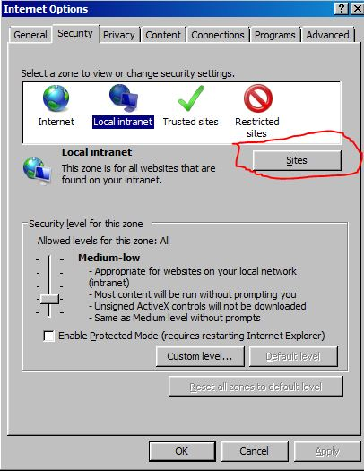
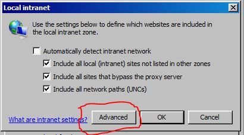
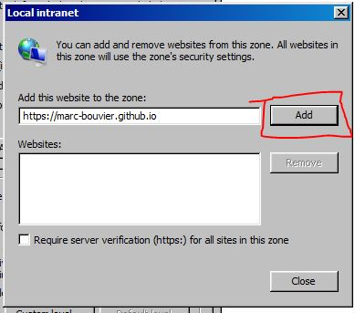
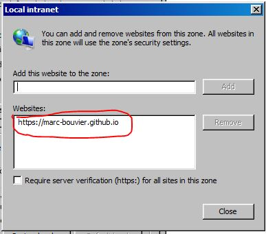
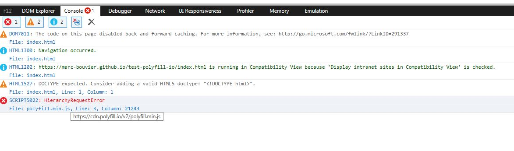
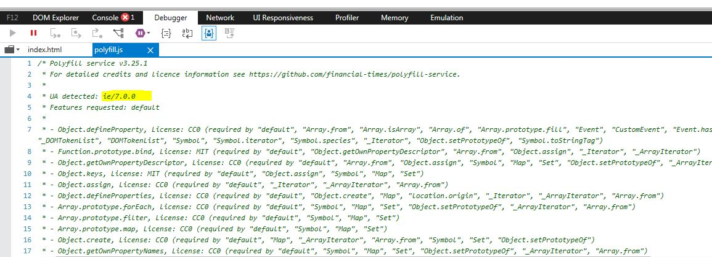

Bug in polyfill.io in Internet Explorer 11 when in "Local intranet" Security Zone
Problem
In Internet Explorer 11, When a site is in "Local intranet" security zone, and using cdn.polyfill.io, ie/7.0.0 is detected instead of ie/11.0.0
Reproduce
- On Windows 7, Internet Explorer 11 (Free images from Microsoft available here)
- Open this page on Internet Explorer 11 : https://marc-bouvier.github.io/test-polyfill-io/index.html
- Then, on internet explorer "internet options"

- add this domain to "Local intranet" sites.



- Open page inspection (F12) and reload the page

Error : HierarchyRequestError
- Open Debugger tab and look at the comment section of "polyfill.js" file

ie/7.0.0 is detected instead of ie/11.0.0